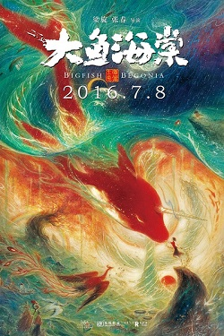

Big Fish
 Kalimba
Kalimba
Video
This piece of music is the theme song of a movie named Big Fish & Begonia, one of my favorites. For this reason, I played this song with Kalimba.
Plot
In a mystical realm that exists beneath the human world, populated by magical-powered beings, a girl named Chun participates in a coming-of-age ritual where she is transported through a portal of water to experience the human world in the form of a red dolphin. There, she encounters a human boy who lives by the sea and reveres aquatic creatures. During a storm, Chun is tangled in a fishing net near the boy’s house, and the boy drowns while freeing her from the net. Chun returns to her world, taking the boy’s ocarina with her.
Chun bargains with the Soul Keeper, a resident of her world who collects virtuous departed souls from the human world, to return the boy to life. The Soul Keeper takes half of her lifespan in exchange for giving her the boy’s soul, which has manifested in this world in the form of a baby dolphin. She advises her that she must nurture the dolphin to adulthood in order to return the boy’s soul to the human world. Qiu, Chun’s childhood friend, discovers her undertaking; since beings from the human world are forbidden, he promises to help her keep her task secret. Together, they name the dolphin Kun, after a massive fish of legend.
Chun’s mother soon finds Kun and throws him into the sewer. While searching for Kun, Chun and Qiu meet the rat matron, who collects the souls of sinners from the human world, which manifest in the form of rats. She takes an interest in the dolphin and summons her rats to recover him from the sewer.
Later, Chun and Qiu manage to take Kun away before he is narrowly discovered by the villagers. In their search for a new home for the dolphin, Qiu is bitten by a two-headed snake. Chun’s grandfather draws the venom into his own body to save Qiu’s life. Before succumbing to the venom, he confides in her that he will support her in her task even in death. After his passing, his soul manifests in the form of a begonia tree.
As Chun’s world begins to experience unnatural torrential rains and snowfall, her family and the local elders realize that Kun’s continued presence has caused these phenomena. One night, after Chun confesses to Qiu that she traded away half her lifespan, Qiu receives a warning from the rat matron to hide Kun. He puts Kun in a frozen lake in order to save Chun from further persecution, but Chun dives in after Kun. The rat matron summons her rats to recover Chun and Kun from the icy water, and takes the ocarina from Chun, planning to use it to secure her own passage to the human world.
As Chun continues to watch over Kun, Qiu visits the soul keeper to bargain his own life for the return of Chun’s. The soul keeper demands his entire lifespan as payment, while warning that Chun will still die regardless when Kun returns to the human world. The soul keeper reveals to Qiu how to save Chun from this fate.
The residents of Chun’s world gather to kill Kun and avert further calamity. Qiu arrives and performs the ritual to open a portal to the human world, but Kun is unable to swim through it, while the rat matron arrives and uses the ocarina to pass through the portal. Holes in the sky begin to open uncontrollably, flooding Chun’s world with sea water from the human world.
Chun is reminded that her actions to save Kun are dooming the people of her own world; she tries to help them evacuate from the flood, but is spurned by all, including her mother. As a last resort, Chun sacrifices herself, merging her body with her grandfather’s begonia tree to grow it to colossal proportions, plugging the holes in the sky and saving everyone from the flood.
Kun breaks a branch off the begonia tree and brings it to the soul keeper, who restores Chun to life from it. She sets her on a pilgrimage to return Kun to his world; along the way, they find Qiu, who joins them. Qiu asks her whether she would like to live in the human world herself, but, overwhelmed with regret in knowing they are spending their last night together, is unable to express his feelings for her.
The next day, Chun bids Kun farewell as Qiu opens one last portal for his return. At the same time, Qiu, following the soul keeper’s instructions, casts a spell that will send Chun to the human world while killing him by setting him on magical fire. As he burns away, Qiu tells her that when she sees the wind and rain to think of him and he’ll be with her always. Chun is transformed into a red dolphin, allowing her to follow Kun through the portal.
On a seashore in the human world, Kun and Chun wash ashore in their human forms. As Kun comes to, he sees Chun holding out her hand to him.
In a mid-credits scene, the soul keeper restores Qiu to life from his ashes and declares Qiu her successor, revealing the true cost of Qiu’s sacrifice for Chun.
